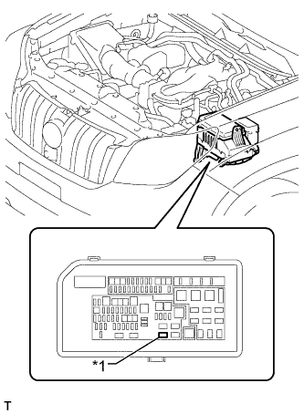
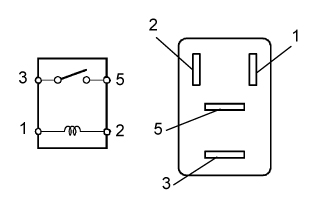

РЕЛЕ (для моделей с электромагнитной муфтой управления) > ПРОВЕРКА БЕЗ СНЯТИЯ С АВТОМОБИЛЯ |
| 1. СНИМИТЕ РЕЛЕ ЭЛЕКТРОМАГНИТНОЙ МУФТЫ |
|  |
Извлеките реле электромагнитной муфты из блока реле моторного отсека.
| *1 | Реле электромагнитной муфты |
| 2. ПРОВЕРЬТЕ РЕЛЕ ЭЛЕКТРОМАГНИТНОЙ МУФТЫ |
|  |
Измерьте сопротивление в соответствии со значениями, приведенными в таблице ниже.
| Контакты для подключения диагностического прибора | Условие | Заданные условия |
| 3 - 5 | Напряжение аккумуляторной батареи не подается на контакты 1 и 2 | 10 кОм или более |
| Напряжение аккумуляторной батареи подается на контакты 1 и 2 | Менее 1 Ом |
| 3. УСТАНОВИТЕ РЕЛЕ ЭЛЕКТРОМАГНИТНОЙ МУФТЫ |
Установите реле электромагнитной муфты в блок реле моторного отсека.